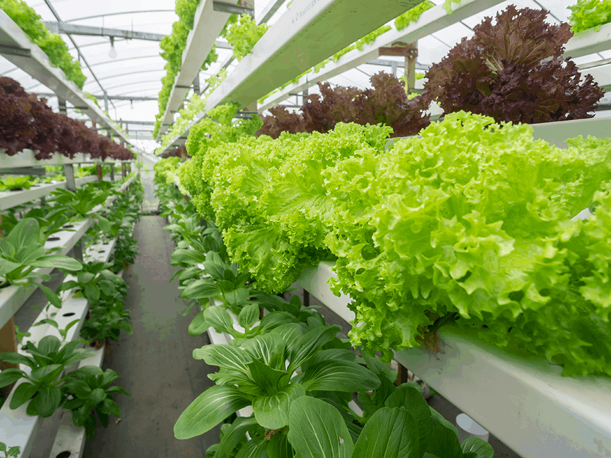

INTERNET OF THINGS


How to Build an Automated Home IoT Food Production System
A fresh cup of tea from home grown herbs. To bring that idea to reality i built a hydroponics IoT system based on a Deep water Culture approach using multiple sensors to collect and store plant data.
